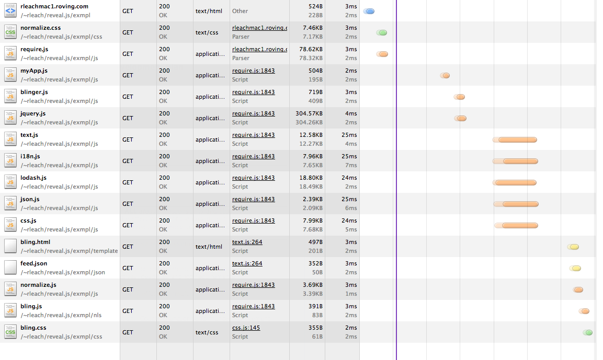
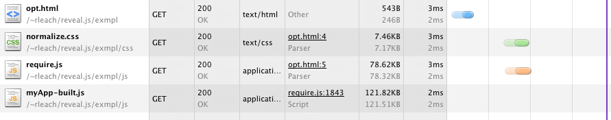

(Or - It's time for JavaScript to start acting like an adult)
<script src="scripts/jquery.js"></script>
<script src="scripts/plugin1.jquery.js"></script>
<script src="scripts/plugin2.jquery.js"></script>
<script src="scripts/plugin3.jquery.js"></script>
<script src="scripts/plugin4.jquery.js"></script>
<script src="scripts/backbone.js"></script>
<script src="scripts/underscore.js"></script>
<script src="scripts/library1.js"></script>
<script src="scripts/library2.js"></script>
<script src="scripts/myApp.js"></script>
<script src="scripts/util1.js"></script>
<script src="scripts/util2.js"></script>
<script src="scripts/myPage.js"></script>
A module is different from a traditional script file in that it defines a well-scoped object that avoids polluting the global namespace. It can explicitly list its dependencies and get a handle on those dependencies without needing to refer to global objects, but instead receive the dependencies as arguments to the function that defines the module.
Modules in RequireJS are an extension of the Module Pattern, with the benefit of not needing globals to refer to other modules. The RequireJS syntax for modules allows them to be loaded as fast as possible, even out of order, but evaluated in the correct dependency order...
Let's think about this for a minute:
Libraries galore, and some decent patterns:
scripts/mypage.js
(function ($) {
MyGlobalAPINamespace = (function () {
// ... set stuff and do some private things
SomeLibraryINeed.doSomething()
// return my public API
return {
cleanLaundry: function() { //... },
stuffIThinkIsNiceAboutMe: function() { //... }
};
})();
}(jQuery));
<script src="scripts/plugin.jquery.js"></script>
<script src="scripts/jquery.js"></script>
<script src="scripts/jquery.js"></script>
<script src="scripts/plugin1.jquery.js"></script>
<script src="scripts/plugin2.jquery.js"></script>
<script src="scripts/plugin3.jquery.js"></script>
<script src="scripts/plugin4.jquery.js"></script>
...
<script src="scripts/jquery.js"></script>
(function ($) {
MyGlobalAPINamespace = (function () {
// ... set stuff and do some private things
SomeLibraryINeed.doSomething()
// return my public API
return {
cleanLaundry: function() { //... },
stuffIThinkIsNiceAboutMe: function() { //... }
}
})();
}(jQuery));
SomeLibraryINeed has to be therejQuery has to be thereMyGlobalAPINamespace?What if it was already defined?
or this file is loaded again?
or some other library wants MyGlobalAPINamespace?
Portal environments, multi-contributor apps? Multiple versions of my API? (Galileo)
If this file grew, how easy would it be to see what my dependencies actually are?
SomeOtherLibrary.doSomethingElse() hidden on line 3045 (Don't you dare make a 3000 line file!)
Nice tight modules = Happy coder...
Sad YSLOW
Lots of http
Script blocking
<script src="scripts/jquery.js"></script>
<script src="scripts/my-big-ass-optimized-app-in-one-file.js"></script>
Common bundles
Page level bundles
Potentially parsing a lot of code you may not use
Explicit, separate, server side configuration
Can get stale
I'm smart and I like following an MVC pattern in my front end code
A JavaScript Controller should know how to build its view
We need: templates, css, i18n dictionaries
Implements AMD
Came out of commonjs module definition rejiggered for the browser and asynchronous loading
scripts/myApp.js
require(['blinger','jquery'], function(blinger, $) {
// I get here only when all my dependencies are available
$elem = $('#blingMe').hide();
// ... other stuff
blinger.bling($elem);
});
scripts/myModule.js
define([
'jquery',
'lodash',
'text!../templates/bling.html',
'i18n!../nls/bling',
'json!../json/feed.json',
'css!../css/bling.css'
], function($, _, tmpl, i18n, data) {
var compTmpl = _.template(tmpl);
data = $.extend({}, i18n, data);
$.fn.bling = function() {
return $(this).html(compTmpl(data));
};
return {
bling: function($elem) {
$elem.bling().show();
}
}
});
node r.js -o baseUrl=. name=myApp out=myApp-built.js

